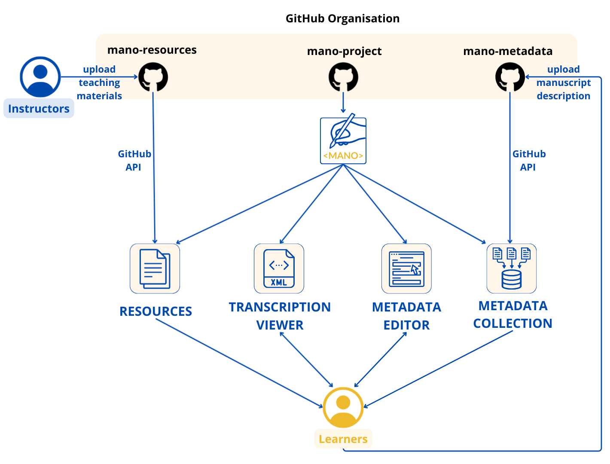
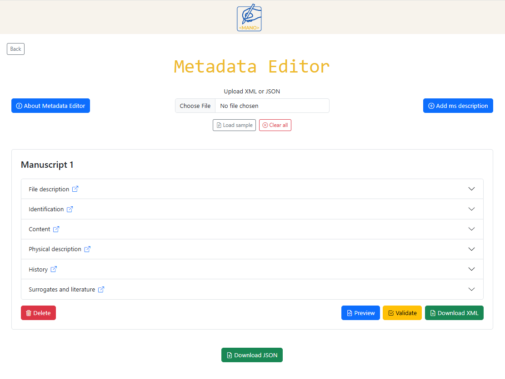
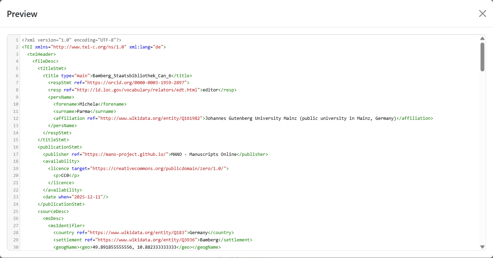
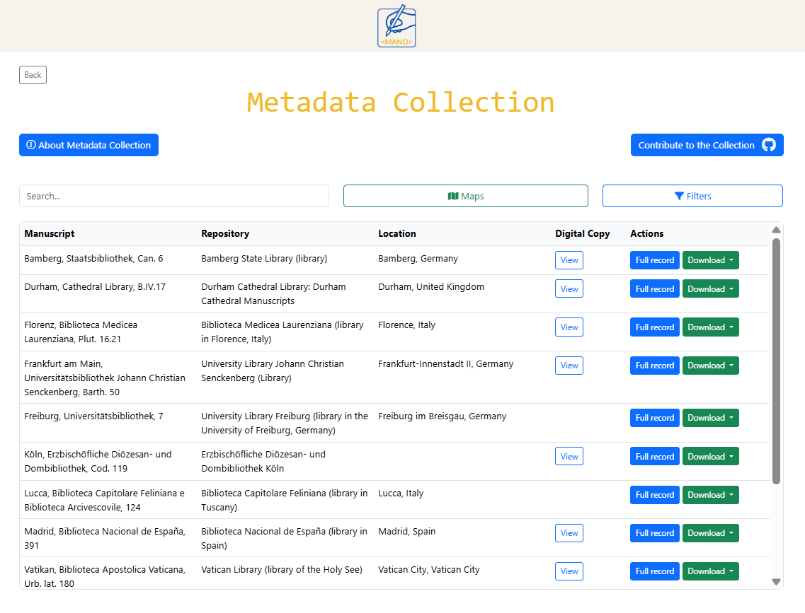
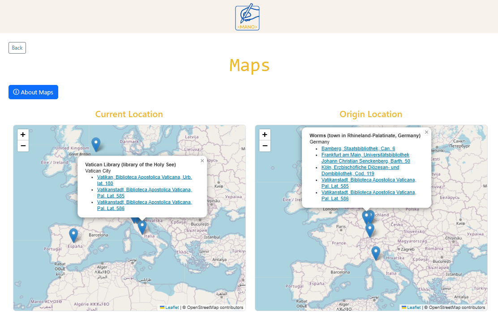
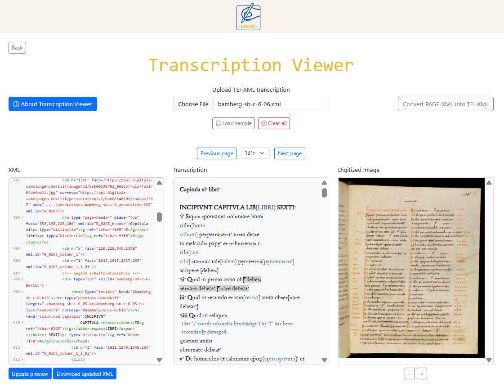

Documentation
<MANO> is a platform designed for teaching and learning digital manuscript studies. It provides a lightweight environment where users can explore TEI-XML transcriptions, create manuscript metadata, and share teaching materials, without requiring installations, accounts, or institutional infrastructure. MANO is organized into a set of modular tools that support complementary aspects of manuscript description and transcription work. Each module can be used independently or as part of an integrated teaching workflow.
<MANO> – Manuscripts Online is a platform for working with digital manuscript materials directly in the browser. It brings together tools for viewing TEI-XML transcriptions, creating manuscript descriptions, consulting community-contributed metadata, and accessing teaching resources. Because everything runs client-side, users can work with their own files locally, and nothing is stored on a server unless they choose to publish it in a GitHub repository. The platform is intended for both teaching and introductory research contexts. Students can learn TEI, explore manuscript structures, and create descriptions without needing specialised software, while instructors can assemble and share course materials through a simple static repository.
MANO was created to address a key challenge in manuscript and TEI pedagogy: many existing tools rely on complex infrastructures, licensed editors, or institutional hosting. These environments are powerful but often inaccessible to students, early-career researchers, or instructors working in low-resource or short-term teaching contexts. MANO lowers these barriers by offering a lightweight, sustainable alternative that runs entirely in the browser.
MANO is built around a set of guiding principles that shape both its functionality and its technical design:
- Browser-based and installation-free. All tools run entirely in the browser so that learners can begin working immediately, without setup tasks or user accounts.
- Serverless and sustainable. The platform avoids databases, backends, or institutional servers. Static hosting on GitHub ensures long-term accessibility with minimal maintenance.
- Lightweight and modular. Each component functions independently, allowing instructors to use only what they need.
- Pedagogically driven. The interface and workflows are designed to support teaching scenarios: introducing TEI, exploring manuscript structure, and guiding students through description tasks.
- Open and reusable. All materials—code, documentation, and example files—are openly available. Through GitHub, users can fork, adapt, and contribute to shared collections of metadata and transcriptions.
MANO is organized into a set of independent, browser-based tools that together support common tasks in digital manuscript work:
- Resources: Displays teaching materials hosted in a GitHub repository. Instructors upload resources; learners download them directly from the interface.
- Metadata Editor: A form-based environment for creating structured manuscript descriptions. Users can enter cataloging information, generate JSON/TEI outputs, and download their results.
- Metadata Collection: Displays manuscript descriptions contributed to a shared GitHub repository, allowing learners and instructors to browse examples produced within a course or community.
- Transcription Viewer: A viewer for TEI-XML transcriptions, offering synchronized panels for the XML code, a readable HTML rendering, and—when present—manuscript images linked to the transcription. Supports basic editing and file export.

Each component works autonomously, but together they form a complete workflow for transcription, description, visualization, and sharing.
What it is
The Resources section provides access to a shared repository of teaching materials related to digital manuscript studies. These materials are stored in a public GitHub repository. All learners can freely download them from the MANO interface, and instructors can contribute new materials to enrich the shared collection.
The Resources repository is open to instructors who wish to share teaching materials with the MANO community. By uploading materials to the GitHub repository, you agree to share them under the Creative Commons Attribution–NonCommercial 4.0 (CC BY-NC 4.0) license. This means:
- materials may be freely reused for educational and non-commercial purposes
- the original author must always be acknowledged
- commercial reuse is not permitted
MANO automatically displays contributor's name, contributor's identifier (if available), and learning materials with direct download.

When to use it
Use the Resources section when:
- learning TEI and manuscript studies,
- accessing exercises, guides, or teaching materials contributed by others,
- providing starter materials for in-class exercises,
- preparing your own teaching session and wanting reusable examples.
How it works
Each contributor has a personal entry in the Resources table, showing their name, an identifier such as ORCID, VIAF, or GND (when available), and a button labelled Teaching Materials.
Clicking Teaching Materials opens a list of all files shared by that contributor. Each file has a direct download link, so learners can obtain PDFs, slides, or other materials without logging into GitHub.
For users who only want to access resources, GitHub remains in the background: the MANO interface automatically loads and displays all available materials.
How to upload your teaching materials
A detailed, step-by-step user guide with FAQs and additional instructions for uploading teaching materials is available in the GitHub repository.
1. Log in to GitHub
You need a free GitHub account. If you already have one, simply sign in.
2. Open the Resources repository
https://github.com/mano-project/mano-resources
3. Create your personal folder
- Click Add file → Create new file
- In the file name field, type your folder name followed by /README.md:
Surname Name Affiliation ORCID/README.md (or VIAF / GND. Users with no identifier may still contribute; the identifier field is optional but recommended.) - In the large text box, enter Placeholder or a brief description of yourself and your teaching area.
- Click Commit changes.
4. Upload your teaching materials
- Open your newly created folder.
- Click Add file → Upload files.
- Drag and drop your PDFs or other materials (or use “Choose your files”).
- Click Commit changes.
Your materials will now appear automatically in the MANO Resources section of the website.
What it is
The Metadata Editor is a structured environment for creating manuscript descriptions following the TEI P5 Manuscript Description module. It translates the TEI manuscript description model into an intuitive, form-based interface, allowing users to produce TEI-compatible metadata without writing XML directly. The editor supports both traditional cataloging categories and lightweight Linked Open Data (LOD) integration.
When to use it
Use the Metadata Editor when:
- learning or teaching the structure of TEI manuscript descriptions
- producing manuscript metadata for coursework, workshops, or small projects
- preparing TEI-conformant descriptions without writing XML
- contributing descriptions to the shared MANO Metadata Collection
How it works
The Metadata Editor is designed to make the TEI Manuscript Description module accessible to users without technical XML knowledge. All fields correspond to TEI elements, and the structure of the form helps ensure that each description is valid, complete, and standardised. Multiple manuscripts can be described in the same session using the Add Manuscript button.
The form is divided into six sections: file description, identification, content, physical description, history, and surrogates and literature. Each section collects specific types of information and, where available, can be enriched with Linked Open Data.
Throughout the form, small link icons next to field labels provide direct access to external documentation. Depending on the context, these links may open:
- relevant sections of the TEI Guidelines
- licence explanations (e.g. Creative Commons pages)
- authority or help pages from external services such as Wikidata or OpenLibrary
This allows users to consult definitions, usage examples, and licence information.

File description
This section records basic information about the description itself rather than the manuscript:
- file name,
- language of data entry,
- license,
- person(s) responsible for data entry, including name, surname, external identifier, and affiliation.
It corresponds to the header elements that describe the metadata record itself (modelled on TEI <fileDesc>).
Identification
The identification section gathers core cataloging information that uniquely identifies the manuscript:
- manuscript name,
- collection,
- sigle,
- alternative identifier,
- library (the holding institution), with geographical coordinates, settlement, and country
It corresponds to TEI element <msIdentifier> and related sub-elements.
Where available, repository and place fields can be linked to Wikidata entries. Using Wikidata URIs adds stable identifiers to the description and supports LOD practices by connecting the manuscript record to external authority data.
Content
This section describes what the manuscript contains. The user can add one or more textual items and for each item can provide:
- author,
- title,
- one or more page ranges,
- incipit,
- explicit,
- textual family,
- textual subfamily,
- text language,
- text genre.
It maps onto TEI elements <msContents>, <msItem>, and related components.
Author and work information can optionally be aligned with authority data from Wikidata, enabling links between the manuscript description and external information about people, works, or traditions. This strengthens the LOD dimension of the metadata and supports reuse in other environments.
Physical description
The physical description section focuses on the material aspects of the manuscript. It corresponds to TEI element <physDesc> and related elements. Users can provide the following data:
- condition description,
- material,
- height and width,
- leaves, columns, and written lines,
- number of hands and description,
- script(s) description,
- decoration description,
- music notation,
- additions,
- accompanying material description,
- binding description,
- seal(s) description.
History
The history section records information about the origin and provenance of the manuscript:
where and when it was produced, and how it may have travelled or changed ownership.
It corresponds mainly to <history>, <origin>, and <provenance>. This section includes:
- summary,
- origin, it includes:
- place of origin, together with geographical coordinates, and country,
- date of origin, expressed both as a human-readable text and as machine-readable values.
- one or more provenance block. Each one includes:
- previous owner, together with geographical coordinates, settlement, and country,
- period of ownership, expressed both as a human-readable text and as machine-readable values.
Origin places and institutions are linked to Wikidata, so that geographic and institutional information becomes part of a larger LOD network. This makes it easier to connect MANO descriptions with other datasets that reference the same entities.
Surrogates and literature
The final section brings together references to digital surrogates and literature references. It aligns with TEI structures for references and bibliography, such as <surrogates> and <listBibl>.
- links to digitised facsimiles, IIIF resources, or catalogue links,
- bibliographic entries connected to authority data where possible.
Bibliographic items can be enriched using OpenLibrary: searches in OpenLibrary help retrieve consistent book data (titles, authors, identifiers such as ISBN), which are stored together with a stable OpenLibrary identifier. This supports LOD by connecting local references in the description to a wider ecosystem of bibliographic data.
If a book is not available in OpenLibrary, users can still add the reference manually by providing the standard bibliographic fields: title, author(s), year of publication, publisher, place of publication, series, and ISBN. These manually entered records are handled exactly like imported ones, ensuring that all references remain complete and usable even when no external authority record exists.
Upload your description or Load sample
The system let the users to:
- Upload XML or JSON
Users may also upload an existing manuscript description created earlier in MANO. Previously downloaded XML or JSON files can be re-uploaded into the editor, allowing records to be inspected, modified, or expanded at any time.
- Load sample
It loads a complete, ready-made manuscript description that illustrates how the different fields work together.
Preview and validation
Two additional features help ensure accuracy:
-
Preview
Generates a live TEI-XML snippet that helps learners see and understand the TEI structure behind the form.

-
Validation
Runs validation checks to ensure required elements are present, values are well-formed, identifiers are not duplicated, and referenced items are not already in the list. This helps avoid inconsistencies when contributing metadata to the shared collection. Validation distinguishes between:
- Mandatory issues: errors that must be corrected before a download is permitted,
- Optional checks: warnings about potential inconsistencies that do not prevent downloading.
The validation ruleset used in the Metadata Editor is accessible here.
Output
The editor enables the user to download:
- TEI-XML file, ready for integration into larger TEI files.
- JSON file, suitable for the MANO Metadata Collection.
Users can download their files, reuse them in their own projects, or contribute them to the MANO Metadata Collection through GitHub.
What it is
The Metadata Collection is the area of the MANO platform where all manuscript descriptions created with the Metadata Editor are gathered and published. It functions as a shared digital archive that continually grows as users contribute new records. Each description appears as an entry in the main table, where users can browse, inspect, and download the records.
When to use it
- to explore manuscript descriptions created through the Metadata Editor,
- to browse manuscripts by origin, material, language, date, or other filters,
- to view available digitizations of manuscripts (when a link is provided),
- to consult a detailed record by opening the Full Record view,
- to download descriptions in XML, JSON, or PDF format.
How it works
The Metadata Collection reads all description files directly from the public GitHub repository mano-metadata. There is no database: the platform loads, interprets, and displays the JSON files directly from GitHub. This design ensures transparency and long-term sustainability, as the metadata remain openly accessible in the repository.
The main table allows users to:
- search manuscripts by keyword,
- filter records by repository, date of origin, material, script, language, provenance, and more,
- open external digitizations when available,
- expand a full structured view of the description using the Full Record button,
- download metadata in JSON, TEI-XML, or PDF format.

Maps: Current Location and Place of Origin
All metadata in the Collection are automatically visualised on two interactive maps:
- Current Location Map showing where manuscripts are presently held,
- Origin Location Map showing where manuscripts were produced.
Each marker on the map represents a place connected to one or more manuscripts. Clicking a marker displays a list of all manuscripts associated with that location, with direct links back to the corresponding entries in the main table.

How to contribute your descriptions
After creating a manuscript description in the Metadata Editor, users download the record in JSON format and upload it to the GitHub repository: https://github.com/mano-project/mano-metadata.
By uploading metadata to this repository, contributors agree to share them under the CC BY-NC 4.0 license. Materials may be reused for non-commercial educational purposes, provided proper attribution is given.
A detailed, step-by-step user guide with FAQs and additional instructions for uploading teaching materials is available in the GitHub repository.
- Create the manuscript description using the Metadata Editor.
- Download the resulting JSON file.
- Log into GitHub with a free account.
- Navigate to the mano-metadata repository.
- Upload the JSON file to the
datafolder. - Commit the changes.
Once the JSON file is stored in the repository, the MANO platform automatically detects it and displays the new description in the Collection.
What it is
The Transcription Viewer is designed to make TEI-XML transcriptions easy to read and explore, even for users without prior TEI experience or without access to specialised XML editors such as Oxygen. The Viewer transforms TEI-XML into a clear, readable interface and allows users to inspect, edit, and download transcription files directly in the browser.
When to use it
- to upload and view TEI-XML transcriptions in a structured way,
- to explore or teach TEI markup using a visual, browser-based tool,
- to edit the XML code and preview the results immediately,
- to work with example material using the built-in Load sample function.
How it works
The interface consists of three synchronised panels:
- XML: shows the transcription as editable XML,
- Transcription: provide a readable visualisation of the transcription,
- Digitized Image: displays images, when the link is available.

Upload your transcription or Load sample
Users can add their own transcription by clicking Choose file and selecting a TEI-XML file from their computer. The file is read directly in the browser, and the three panels update automatically.
The Load sample button provides an example transcription for users who want to experiment with the tool or understand its functionality.
Page navigation
When a TEI-XML file is uploaded, the system automatically reads the XML structure and converts it into
formatted, readable text. If the transcription includes page breaks (<pb>), the platform automatically generates a page navigation system.
Facsimile synchronisation
When the XML includes direct links to digitised images, the corresponding facsimile appears in the right-hand panel. The image viewer supports zoom controls, and clicking through the transcription updates the displayed image accordingly. If no image link is provided in the XML, this panel remains empty.
Editing and updating the transcription
The XML code can be edited directly within the Viewer. After making changes, users can click Update Preview to regenerate the rendered text and refresh image synchronisation. The updated transcription can then be downloaded as a new TEI-XML file.
Convert PAGE-XML into TEI-XML
MANO includes a dedicated conversion tool that transforms one or more PAGE-XML files into a unified TEI-XML transcription. This tool is intended for situations where HTR/OCR software exports PAGE-XML instead of TEI. Users can upload multiple PAGE files, which MANO merges into a single TEI document containing page breaks, region ordering, and reading text. The resulting TEI file can be downloaded and opened in the Transcription Viewer for further inspection, editing, and alignment with images.
System Overview
MANO is implemented as a fully client-side web application. All logic—XML parsing, TEI rendering, LOD queries, validation, navigation, map visualisation, and file generation— is executed in the user's browser. The platform does not use a backend server, database, authentication layer, or stateful session storage.
This architecture is designed to remove technical barriers in teaching contexts: no installation, no licenses, and no institutional hosting are required. Learners can immediately begin working with manuscript descriptions and transcriptions, while instructors can reuse or contribute materials with minimal technical setup.
GitHub-Based Ecosystem
MANO uses GitHub both as a hosting environment (via GitHub Pages) and as a storage layer for shared materials. The platform consists of three standalone repositories:
- mano-project: application code, documentation, and static assets,
- mano-resources: teaching materials contributed by instructors,
- mano-metadata: user-contributed manuscript descriptions in JSON.
Data is retrieved at runtime using the GitHub REST API. The application reads repository contents (teaching materials, JSON metadata records) directly in the browser without any intermediary service. This serverless architecture simplifies deployment and ensures long-term transparency: all data remains visible, versioned, and accessible in the repositories themselves.
Linked Open Data Integration
MANO integrates authority data through external LOD services. These lookups are performed on-demand and client-side:
- Wikidata API: used for persons, institutions, places, and affiliations.
- OpenLibrary API: used for data in literature references.
Selected entities contribute both a human-readable label and a stable URI. These identifiers are included in the exported JSON and TEI-XML manuscrip description, improving interoperability and aligning MANO records with broader cultural heritage datasets.